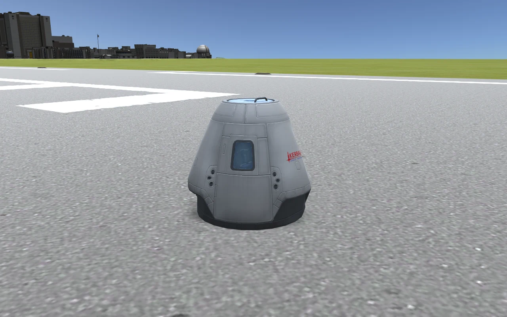
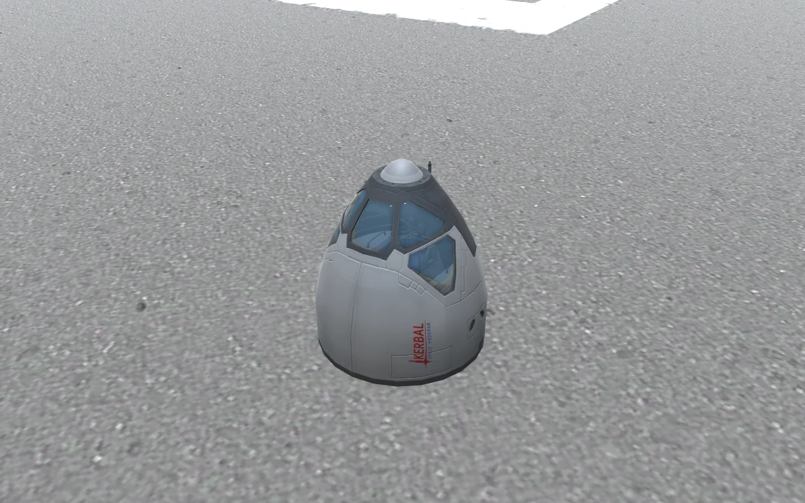
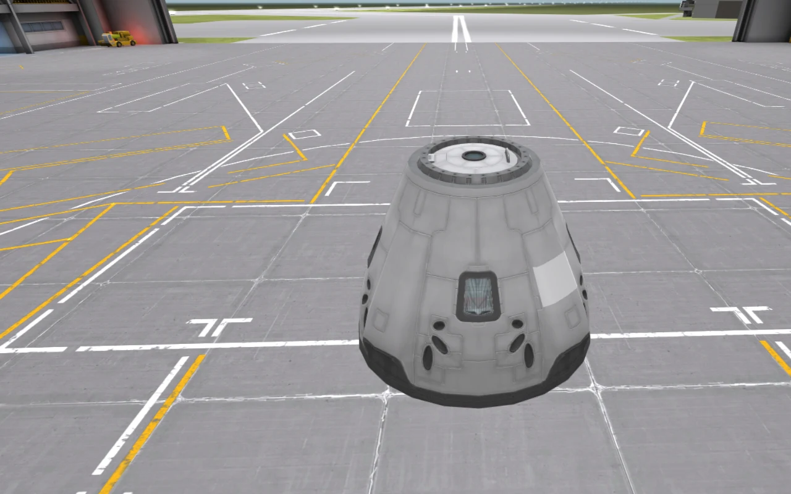
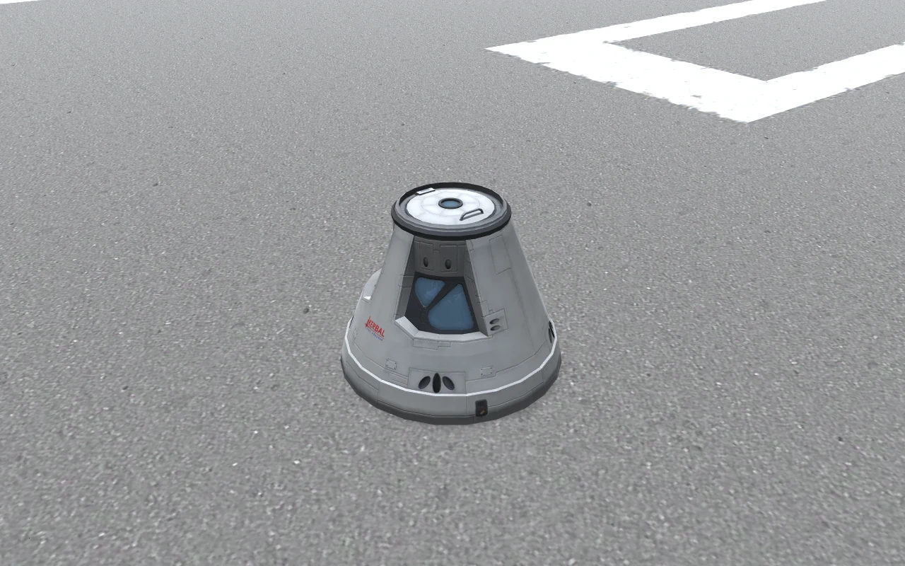
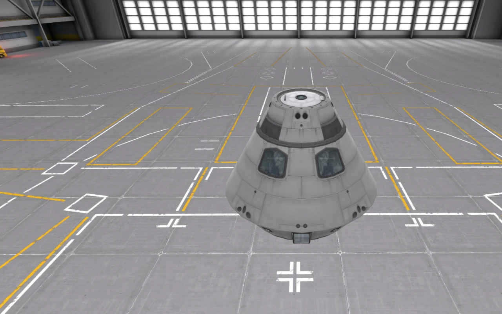
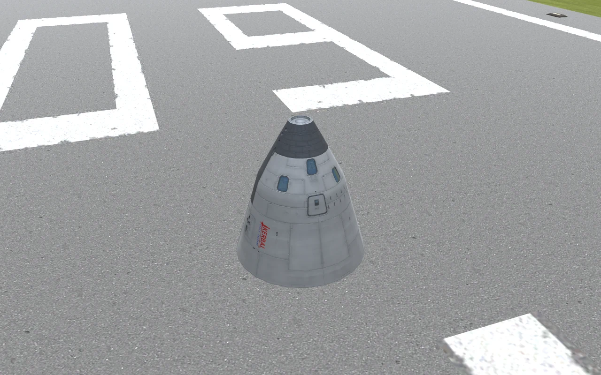

ShineFix home
← Back to supported mods
Near Future Spacecraft
SupportedHuman tested
Parts
Mk1-L 'Nereid' Specialized Command Pod


Mk1-TMA 'Proteus' Advanced Command Pod
Mk1-X 'Phoebe' Orbital Command Pod


Mk3 'Tethys' Specialized Command Pod


Mk3-9 'Rhea' Orbital Command Pod


Mk3B 'Pandora' Advanced Command Pod
Mk4-1 'Amalthea' Specialized Command Module


Mk4-B 'Elara' Biconic Command Module


PPD-1 'Callisto' Heavy Orbital Command Module
RPD-12 Itinerant Service Compartment